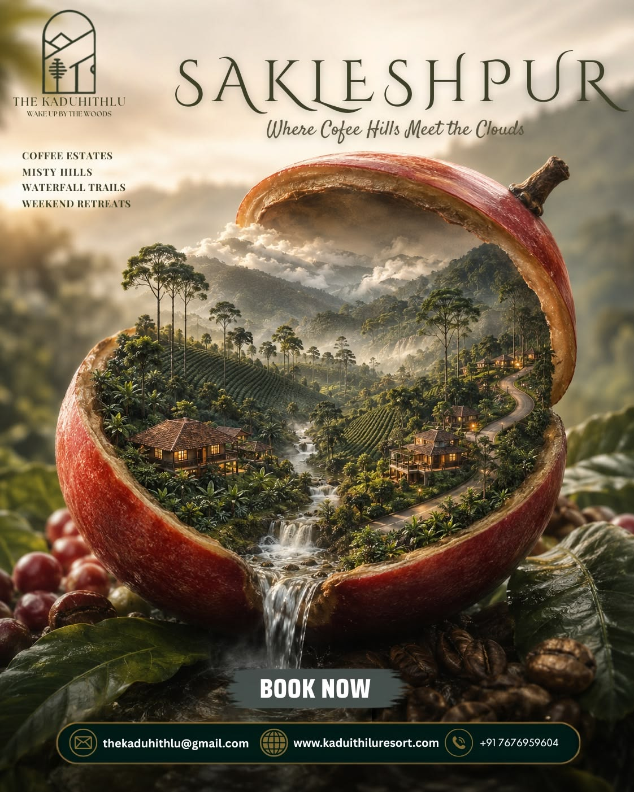

Sakleshpur Explorer
Discover the Green Paradise of Karnataka
Home
Places
Food
Experience
==============================================================================

Welcome to Sakleshpur
Sakleshpur, also known for its lush green landscapes, is one of Karnataka's beautiful hill destinations.
It is famous for its hills, coffee plantations, waterfalls, trekking and beautiful weather.
"Sakleshpur is where nature meets adventure."
Explore Sakleshpur
Explore Places
Discover Sakleshpur Food
Experience Sakleshpur
Why Visit Sakleshpur ?
- Beautiful Hills
- Historic Places
- Amazing Food
- Coffee Plantations
- Waterfalls & Adventure
Quick Facts
Sakleshpur is known for its lush green landscapes.
Sakleshpur is surrounded by beautiful Western Ghats.
Temperature can be around 15°C to 30°C.
© 2026 Thejas BJ. All Rights Reserved.